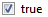
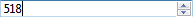
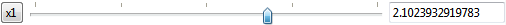
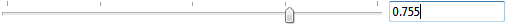
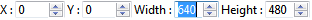
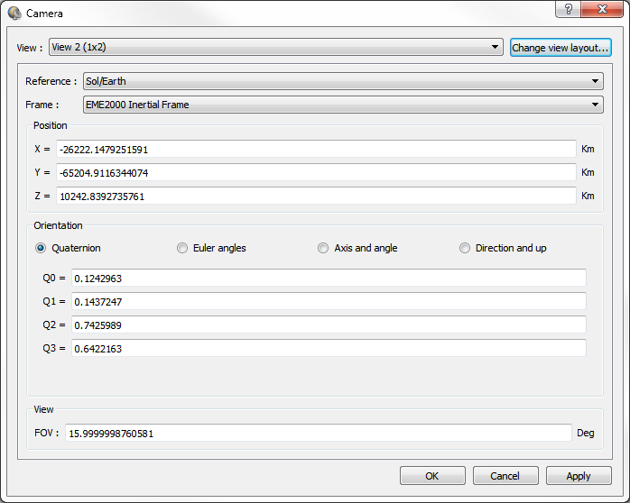
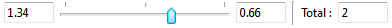

Scenario in VTS¶
The VTS project scenario consists of a set of visualization states applied at precise instants of the visualization.
These states hold visualization properties specific to each client, such as position and orientation of the camera, visibility of satellite components, visibility of the equatorial grid, etc. Special behavior can then be triggered at precise dates through visualization states, e.g. momentarily switching to sensor view when an acquisition occurs on some instrument.
VTS offers two tools to edit a project scenario: the timeline and the view properties editor. In the VTS configuration utility, these tools are available in the Scenario Editor tab.
Scenario editor in the VTS configuration utility
In the Broker, they are available in the Timeline and View Properties tab. Parts of the timeline, displaying dates and the project scenario, are always visible in the Broker, no matter which tab is currently selected.
Timeline¶
The timeline displays and allows selecting, creating and removing visualization states in the project scenario. It also displays the contents of the project’s data files and event files.

Timeline in the Broker
In the VTS configuration utility, modifications to the project in the Structure tab are not reflected automatically in the timeline. The Refresh button must be clicked to update the view.
Badges¶
Timeline files can be categorized using badges. A badge is a stamp identified by a name and a color that is displayed at the right of the file name. Badges are displayed in the Scenario Editor and the Broker.
To assign a new badge to a file, right-click on a file, select “Assign” and then select a badge from the list. New badges can be created using the “New badge” option. All files can have badges except for the special “Scenario” line.
Existing badges can be modified or removed from the project using the “Badges” option.
Except for the scenario, badges can also be used to filter specific files from the Timeline.
Filter Timeline files using badges
Badges are defined at project-level and saved in the VTS project file.
Time window¶
The timeline can be zoomed in/out using the mouse wheel, and panned by drag-and-dropping when the mouse cursor has the shape of a hand. This allows for great flexibility during visualization of a project, since the timeline can easily display an overview of the whole project scenario or a detailed view of a small time frame. The maximum zoom level is limited depending on the scenario duration.
Dates outside of the date range of the project are grayed out in the timeline.
By default, the timeline displays the whole project scenario when the Broker starts. By using the Save View button, users can save :
- If the cursor is currently followed:
- Where it is locked (in % of the window)
- The width of the window (in hours)
- If it is not cursor-locked:
- The date corresponding to the left of the window
- The width of the window (in hours)
Moreover, this button saves the current time format of the timeline.
Time cursor¶
The timeline’s red time cursor indicates the current visualization date. It can be drag-and-dropped to modify the visualization date. While moving the time cursor, the visualization date is broadcasted synchronously to all client applications.
Double-clicking in the timeline moves the time cursor to the mouse location (and sets the visualization date accordingly). Hovering above the time cursor displays a tooltip indicating the visualization date in ISO format. When zooming the timeline, holding the Ctrl key locks the zoom on the time cursor.
The time cursor is not displayed in the VTS configuration utility, where time does not flow.
Project scenario¶
The project scenario is represented as a red line, labelled Scenario in the VTS configuration utility, and displayed in the compact mode GUI of the Broker.
Scenario states¶
Scenario states appear as flags in the project scenario line:
- a blue flag for a regular state not currently selected
- a red flag for the active state (the one displayed in the view properties editor)
- an green flag for the initial state of the visualization
- a grey flag for a disabled state (Broker only)
Also, an orange star appears on states which have been modified but not saved.
In the VTS configuration utility, clicking a state makes it become the active state. In the Broker, the active state is the first enabled state to the left of the time cursor.
When the time cursor moves past a new state in the Broker, it becomes active and its visualization properties are sent to the corresponding client applications. This allows, for example, precisely setting the camera at a user-defined location upon key events of the visualization (instrument acquisition, ground station communication, orbital maneuver, etc.). Note that a disabled state is never active: when disabling the active state, the first enabled previous state becomes active.
The initial state of the visualization is a fictional state mirroring all scenario states prior to the project’s start date. It cannot be removed or disabled, and its date is automatically adjusted when the project’s start date changes.
State time ratio¶
Each state can be associated with a timeratio. When playing the visualization, the current timeratio will be changed by the Broker if:
- The project is configured as using Use scenario state time ratio in the Time & Options panel of the Configurator
- The Use Scenario State Time Ratio button has not been unchecked in the Broker
State time ratio activation with the Broker
Interacting with the scenario¶
Right-clicking the scenario displays a context menu with the following actions:
- The Create state entry creates a new scenario state at the selected location.
- The Select current state entry marks as active the first enabled state to the left of the selected location.
- The Disable all states/Enable all states entry disables/enables all states in the scenario (except for the initial state).
- The Delete all states entry removes all states in the scenario (except for the initial state)
The properties of a new state are copied from the previous state at the date of the new state.
Right-clicking a scenario state displays a context menu with the following actions:
- The Go to state entry sets the visualization date to the date of the selected state.
- The Disable state/Enable state entry disables/enables the selected state.
- The Delete state entry removes the selected state.
Right-clicking on the initial state of the scenario displays a specific context menu:
- The Go to state entry sets the visualization date to the date of the selected state.
- The Create state entry creates a new scenario state at the start of the scenario.
Mission events¶
Mission events attached to project entities are displayed in the first lines of the timeline. Each entity has its own line of events. Refer to the Mission events in VTS chapter for more information on events.
Graphical representation of events¶
The header of each line shows the name of the entity for the events on the line.
Each event is represented by its decoration, configured in the event types editor. Refer to the Configuring event types section of the VTS configuration utility user manual chapter for more information.
Each line can be resized by resizing its header’s line number. Lines can be reordered by drag-and-dropping their headers’ line numbers.
Interacting with events¶
Right-clicking on an event displays a context menu with the following actions:
- The Go to event entry sets the visualization date to the date of the selected event (Broker only).
- The Select state for event entry marks as active the first enabled state to the left of the selected event.
- The Create state at event entry creates a new scenario state at the date of the selected event.
Project scripts¶
VTS scripts used by the project are displayed in the timeline. Each script has its own line. Refer to the Scripts and macros in VTS chapter for more information on script files.
Graphical representation of scripts¶
The header of each line shows the name of the script.
Script commands are displayed as red diamonds at the date at which they occur.
Each line can be resized by resizing its header’s line number. Lines can be reordered by drag-and-dropping their headers’ line numbers.
Interacting with scripts¶
The following actions are available for script headers:
- Double-clicking the header sets the zoom level and pans the timeline so that the line’s width fits in.
- The File properties… button opens a pop-up window with information on the script file.
- The Remove file button removes the script from both the timeline and the project.
Right-clicking on a script command displays a context menu with the following actions:
- The Go to command entry sets the visualization date to the date of the selected command (Broker only).
- The Select state for command entry marks as active the first enabled state to the left of the selected command.
- The Create state at command entry creates a new scenario state at the date of the selected command.
Project data files¶
Data files used by the project (position and orientation of satellites, sensors, etc.) are displayed in the timeline. Each file has its own line.
Graphical representation of files¶
The header of each line shows the name of the file.
The following display modes are available:
- Normal mode: Each value is displayed as a rectangle extending from the date of the value to the date of the next value. Rectangles of identical color indicate identical value. In the screenshot below, this display mode is used for line 2.
- Block mode: The whole file is displayed as a single rectangle. This display mode is used for files with more than 300 lines or bigger than 500Kb, so as not to overload the timeline. When the file contents have not been read, the block is colored in gray and no tooltip is available. Otherwise, the block is colored and tooltips are available. In the screenshot below, this display mode is used for line 3.
- Event mode: Each value is displayed as a diamond at the date of the value. Diamonds of identical color indicate identical value. In the screenshot below, this display mode is used for line 4.
- Interval mode: Identical to Normal mode, except that “neutral” values (0 for real or integer data) are not displayed. This mode offers better contrast to visualize the contents of files with on/off status, such as in/out of eclipse status for a satellite, etc. In the screenshot below, this display mode is used for line 5.
- Gradient mode: The whole file is displayed as a single rectangle filled with a color gradient indicating the value variations in the file. This mode offers better visualization of the evolution of values in a file, but may not be suited to files of dimension greater than 1. In the screenshot below, this display mode is used for line 6.
- Color mode: Identical to Normal mode, except that the color of each rectangle is derived by interpreting the corresponding value as a color. This mode allows displaying the contents of color files, and is only available for data which may be interpreted as a color, i.e. files of real or integer data of dimension 3 or 4. In the screenshot below, this display mode is used for line 7.
- Graph mode: all values are displayed as a graph. This is a preview of the content of the file and may not replace a proper plotter software such as PrestoPlot. In the screenshot below, this display mode is used for line 8.
Display modes available for data files in the Timeline
In order to avoid long loading times, files bigger than 500Kb are only partially loaded. The full contents will however be read if the user selects a mode other than Block for the file. When hovered, files for which the full contents have been read display a tooltip containing the value at the current location of the mouse.
Each line can be resized by resizing its header’s line number. Lines can be reordered by drag-and-dropping their headers’ line numbers.
Color files associated with OEM position files are used to color the line of their position file.
User-selected display modes are saved in the VTS project file and restored upon loading of the project in the VTS configuration utility or the Broker. Be aware that this might result in longer loading times if a mode other than Block is selected for files of significant size.
Interacting with files¶
The following actions are available for file headers:
Double-clicking the header sets the zoom level and pans the timeline so that the line’s width fits in.
- Right-clicking the header displays a context menu with the following entries:
- The File properties… entry opens a pop-up window with information on the file and parameters controlling its appearance in the timeline.
- The Edit file… entry opens the file in a text editor.
- The Ignore file or Remove file entry removes the file from the timeline. Files referenced in the project structure are not removed from the project, they are merely hidden in the timeline and will remain so until they have been added back or restored.
Right-clicking a blank zone below the file header list displays a context menu with the following entries:
Restore ignored files: Restore the previously ignored files.
The file properties pop-up, apart from displaying information on the file, offers the following actions:
- The Edit file… button opens the file in a text editor.
- The Display mode drop-down list allows selecting the display mode for the file.
- The Merge identical values option enables/disables the merging of consecutive identical values in the file into a single value item (rectangle or diamond). This is on by default to improve the clarity of the timeline’s contents.
- The Color overlay option enables/disables the color file overlay for OEM position files.
Note that the number of lines is not displayed in the Properties tab for partially loaded files.
Right-clicking on values in the file’s line displays a context menu with the following actions (not available in Block and Gradient modes):
- The Go to event/Go to interval start/Go to interval end entry sets the visualization date to the date/start date/end date of the selected diamond/rectangle (Broker only).
- The Select state for event/Select state for interval start/Select state for interval end entry marks as active the first enabled state to the left of the selected diamond/rectangle start/end.
- The Create state at event/Create state at interval start/Create state at interval end entry creates a new scenario state at the date of the selected diamond/rectangle start/end.
Timeline toolbar¶
The timeline’s toolbar offers the following actions:
- The Add files… button opens a browser to add one or several files (data files or scripts) to the timeline. These files will have to be saved in the project folder if they are located outside of it. Files not part of the structure added this way will be saved and opened on future loads of the project. Files may also be added by drag-and-dropping them onto the timeline.
- The Refresh timeline button updates the timeline. The project dates, files (events and data) and the contents of these files are updated. The timeline may only be updated if the project is in a valid state.
- The Center cursor button centers the timeline’s view on the time cursor (Broker only).
- The Follow cursor button automatically locks the view on the time cursor as it moves with the visualization date (Broker only).
- The Reset view button zooms in/out the timeline and pans it so that the whole project is displayed. Unless the user interacts with the timeline, upon change of the project limits the timeline will be adjusted to keep the whole project displayed.
- The Save view button saves the current view settings so that they can be restored upon next load of the project. See the Time window section above for more information on the saved and restored view settings.
- The Change date format button changes the date format displayed in the timeline (VTS configuration utility only).
- The Arrange all client application windows button shows a visual tool helping arranging client application windows for the current state.
In the VTS configuration utility, the following buttons allow navigation between scenario states:
- The Initial state button marks the project scenario’s initial state as active.
- The Previous state button marks the active state’s previous state as active.
- The Next state button marks the active state’s next state as active.
- The Final state button marks the project scenario’s last state as active.
In the Broker, the following buttons allow saving view properties of client applications into scenario states:
- The Create state buttons creates a new scenario state at the current visualization date and fills it with view properties gathered from all client applications. The new state is saved (others are not).
- The Save current state only (Ctrl + S) button updates the currently active scenario state with view properties gathered from all client applications. The active state is saved (others are not).
- The Save all states button (Ctrl + Shift + S) button updates the currently active scenario state with view properties gathered from all client applications, and saves all scenario states.
- The Save window positions for current state only button updates the currently active scenario state with the window position of all client applications. The active state is saved (others are not).
- The Save window positions for whole scenario button updates all scenario states with the window position of all client applications. All scenario states are saved.
View properties editor¶
The view properties editor allows editing the view properties of client applications attached to each scenario state.
View properties editor in the Broker
Scenario state properties¶
The Label field displays the label of the current scenario state. This label can be modified and is displayed in the state tooltip.
The Date button opens a dialog to view and edit the date of the current scenario date. However, it is not possible to modify the date of the fictional initial scenario state.
The Filter button (Ctrl+F) shows an editor allowing filtering state properties using case-insensitive regexp patterns .
The Application list displays a list of all client applications. Selecting a client application in the list displays its view properties in the tree hierarchy to the right.
There are two types of view properties: application parameters, which describe global properties specific to the application; and objects parameters, which describe display properties of project entities (central bodies, satellites, sensors, etc.) for the application.
Each property has a label describing its purpose. Clicking or double-clicking a property’s value to the right of its label opens an editor to modify the value.
- Properties with bold labels have had their values modified but not saved. Scenario states for which at least one of their properties has had its value modified appear with an orange star in the timeline.
- Properties with italic labels have a unique value for the whole scenario. Modifying their value automatically affects all scenario states.
Each property can be reset to default by right-click. In the Broker, this action can lead to a message to the concerned application.
- Boolean
- Editor
- 
- Description
- Editor for a boolean property (e.g.: equatorial grid visibility in Celestia).Clicking the checkbox toggles the property.
- Integer or real number
- Editor
- 
- Description
- Editor for an integer or real number property.The integer or real value can be entered manually or increased/decreased using the buttons.
- Character string
- Editor
- Description
- Editor for a string property (e.g.: selected object in Celestia).The string must be entered manually.
- Character string list
- Editor
- Description
- Editor for a string list property (e.g.: visible event types in SurfaceView).The string list must be entered manually. Syntax rules of the VTS synchronization protocol apply (except the newline rule). Refer to the Message syntax section of the Synchronization protocol for VTS clients chapter for a list of these rules.
- Scale factor
- Editor
- 
- Description
- Editor for a scale factor property (e.g.: satellite scale factor in Celestia).The scale factor value can be adjusted by dragging the slider left or right, or entered manually, or reset using the buttons.
- Range
- Editor
- 
- Description
- Editor for a range property (e.g.: ambient light level in Celestia).The range value can be set by moving the slider, or entered manually, or reset using the button.
- Rectangle
- Editor
- 
- Description
- Editor for a rectangle property (e.g.: window position and size).The X, Y coordinates and width, height of the rectangle can each be entered manually or increased/decreased using the buttons.
- Camera
- Editor
- 
- Description
- Editor for camera parameters (e.g.: point of view in Celestia).
- The camera being configured is selected in the View drop-down list. The Celestia view layout can be controlled using the Change view layout… button.
- The reference frame the camera is attached to is defined by an object selected in the Reference drop-down list, and a frame selected in the Frame drop-down list.
- The position of the camera in its reference frame can be entered in the Position group, in kilometers.
- The orientation of the camera in its reference frame can be entered in the Orientation group, either as a quaternion, as Euler angles (in degrees), as an axis and angle (in degrees), or as a direction and up vector.
- The field of view of the camera can be entered in the FOV field, in degrees.
- File
- Editor
- Description
- Editor for file properties.The file path (either relative or absolute) can be entered in the text field or selected through a file browser using the button.
- Time Window
- Editor
- 
- Description
- Editor for a time window. It represents the time distribution before and after a dated event. Durations are in hours.
Further documentation on the properties of standard client applications can be found in the Synchronization protocol for VTS clients chapter. In particular, the Messages received by Celestia and Messages received by SurfaceView sections describe properties of the Celestia and SurfaceView client applications.
View properties editor toolbar¶
The view properties editor offers buttons to propagate view properties between scenario states. Upon selection of one or several properties in the tree hierarchy, these buttons allow copying the selected properties for the same application in one or several other scenario states:
- The Propagate selection to all previous states button copies the selected view properties to all previous scenario states.
- The Propagate selection to previous state button copies the selected view properties to the previous scenario state.
- The Propagate selection to next state button copies the selected view properties to the next scenario state.
- The Propagate selection to all next states button copies the selected view properties to all next scenario states.
- The Propagate selection to all states button copies the selected view properties to all scenario states.
These actions allow easily setting a property value for multiple scenario states. Several properties can be selected by holding down the Ctrl or Shift keys while selecting the properties to propagate. If a tree node is selected, all properties beneath it will be propagated.
In the Broker, the view properties editor also offers the same buttons as those available to save states in the timeline.
Window geometry manager¶
For information, see Window Geometry Manager